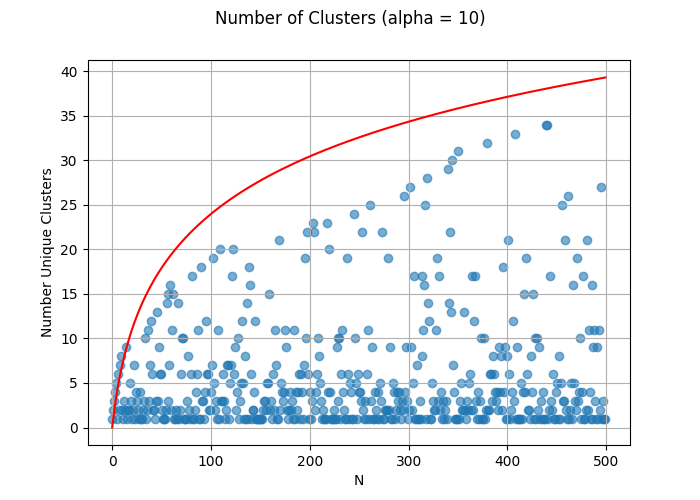
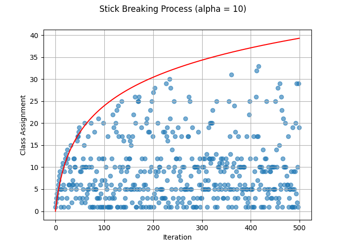

After working with mixture models, it’s natural to wonder how one should best determine the correct number of components to include in our models. One method for determining this is to extend our finite mixture model to the case of infinite components. Infinite components is going to require an infinite probability vector \(\pi\) and typically when thinking about a Dirichlet Distribution, we have \(K << N\). Now we might ask ourselves what happens when \(K>>N\)? We know that the number of unique groups in our sample \(K^*\) will be less than \(N\). To see what this may look like, we can generate \(\pi \sim Dir\left(\frac{\alpha}{K}, ...\right)\) and then sample \(Z \sim cat(\pi)\) with an arbitrarily large \(K\) for increasing values of \(N\).
import numpy as np
import pandas as pd
import scipy as sp
from matplotlib import pyplot as plt
from scipy.stats import dirichlet, beta
K=1000
alpha=10
N=500
def num_clusters(alpha, K, N):
# Sorting the probability vector helps with the cluster naming
p = -np.sort(-dirichlet([alpha/K]*K).rvs().squeeze())
samples = np.random.choice(K, N, p=p, replace=True) + 1
output = [1]
for i in range(1, len(samples)):
if samples[i-1] in output:
output.append(samples[i-1])
else:
output.append(np.max(output) + 1)
np.where(samples == i, i, samples)
return output
y = num_clusters(alpha=alpha, K=K, N=N)
fig, ax = plt.subplots()
ax.scatter(range(len(y)), y, alpha = .6)
ax.plot(range(len(y)), alpha*np.log(1 + np.divide(range(len(y)), alpha)), color = "red")
fig.suptitle("Number of Clusters (alpha = 10)")
ax.grid()
plt.xlabel("N")
plt.ylabel("Number Unique Clusters")
fig.savefig("num_clusters.png")
plt.close(fig)
It’s rather obvious to see that the number of clusters grows logarithmic in \(\alpha\), and we can actually plot the expected value in red as:
\[ \begin{align} \mathbb{E}\left[K^*\right|\alpha] & = \alpha \log\left(1 + \frac{n}{\alpha}\right) \end{align} \]
So this helps us understand how the Dirichlet Distribution could work with large \(K\) and givens us confidence that the distribution is well behaved as \(K\) gets large, but what about when \(K\to\infty\)? ### Stick Breaking
One common way to define the Dirichlet Process is by using the popular “stick breaking” construction. Formally, Let \((\phi_1,\phi_2, ...)\) be a sequence of independent random variables distributed \(Beta(1, \alpha)\). Independent of this sequence let \((Z_1, Z_2, ...)\) be a sequence of random variables with base distribution \(H\), where above we used \(H \sim cat(\pi)\). If we define \(p_1 = \phi_1\) and \(p_i = \phi_i\prod_{j<i}(1-\phi_j)\), then the random measure \(P = \sum_{i\in \mathbb{N}}p_i\delta(Z_i)\) is a Dirichlet Process with concentration parameter \(\alpha\) and base measure \(H\). The nice thing about this formulation is that we can take finite samples from an infinite dimensional Dirichlet distribution by following this process.
To see this, we can generate samples using the stick-breaking method and verify that they are visually similar to those we generated using the Dirichlet Distribution for large values of \(K\).
def stick_breaking(N, alpha):
table = [1]
beta = np.random.beta(1, alpha)
remaining_length = 1-beta
beta_vals = [beta]
probs = [beta, 1-beta]
for i in range(1, N):
sample = np.random.choice(range(len(probs)), p=np.array(probs)) + 1
if sample == len(probs):
table.append(sample)
new_beta = np.random.beta(1, alpha)
beta_vals.append(new_beta)
probs[-1] = new_beta * remaining_length
remaining_length = 1 - np.sum(probs)
probs.append(1 - np.sum(probs))
else:
table.append(sample)
return table, probs
y, prob = stick_breaking(500, 10)
fig, ax = plt.subplots()
ax.scatter(range(len(y)), y, alpha = .6)
ax.plot(range(len(y)), 10*np.log(1 + np.divide(range(len(y)), 10)), color = "red")
fig.suptitle("Stick Breaking Process (alpha = 10)")
ax.grid()
plt.xlabel("Iteration")
plt.ylabel("Class Assignment")
fig.savefig("stick_breaking.png")
plt.close(fig)
A Dirichlet Process is best described as a stochastic process used in bayesian non-parametric modeling, and more specifically in Dirichlet Process Mixture Models (Infinite Mixture Models). Each draw from a DP is itself a distribution, making it a distribution over distributions. The DP derives it’s name from the fact that the marginal distributions of a DP is a finite dimensional Dirichlet Distribution just as a Gaussian Process has a finite dimensional Gaussian distributed marginal distribution. The DP has an infinite number of parameters which places it in the family of non-parametric.